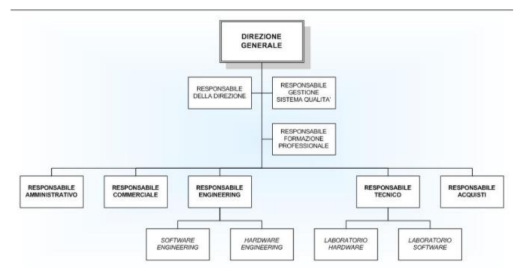

Un’azienda è un insieme organizzato di persone, beni e mezzi che svolge attività economiche per soddisfare i bisogni umani, attraverso la produzione o la fornitura di beni o servizi. Lo scopo può essere di lucro (impresa) oppure no (no-profit).
| Tipo | Descrizione |
|---|---|
| Economici | Si soddisfano acquistando beni/servizi (es. cibo, casa). Richiedono risorse economiche. |
| Non Economici | Si soddisfano senza denaro (es. amicizia, amore, rispetto). |
| Primari | Essenziali alla sopravvivenza. |
| Secondari | Legati a benessere e sviluppo personale. |
È l’insieme di operazioni compiute per utilizzare risorse, beni e servizi al fine di soddisfare bisogni economici. Le principali fasi sono:
È l’insieme delle componenti organizzative e operative necessarie per raggiungere gli scopi aziendali. È composto da:
Ogni azienda si struttura in aree funzionali tramite un organigramma, che mostra i ruoli e le responsabilità.
La gestione è l’attività di pianificare, organizzare, dirigere e controllare le operazioni aziendali per raggiungere gli obiettivi.
| Attività | Descrizione |
|---|---|
| Finanziamento | Acquisizione di mezzi monetari esterni |
| Investimento | Acquisto di beni o risorse |
| Trasformazione Economica | Combinazione dei fattori produttivi per generare prodotti |
| Disinvestimento | Dismissione o vendita di attività |
| Tipo | Descrizione |
|---|---|
| Tecnico | Produzione e trasformazione dei beni |
| Finanziario | Gestione dei flussi monetari (entrate/uscite) |
| Economico | Valutazione costi/ricavi per creare ricchezza |
Le aziende di produzione creano offerta sul mercato con lo scopo di ottenere un guadagno. Utilizzano fattori produttivi originari: